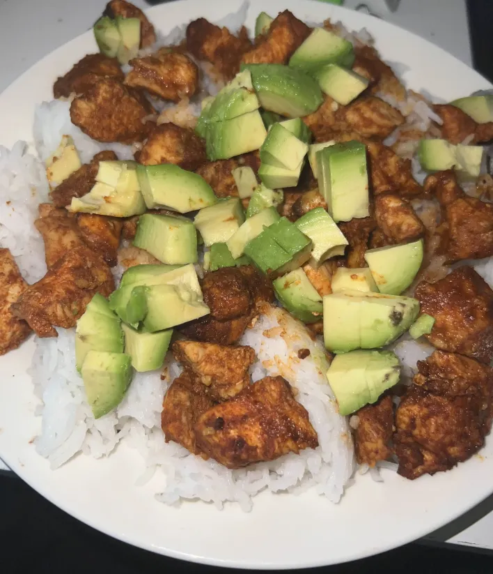
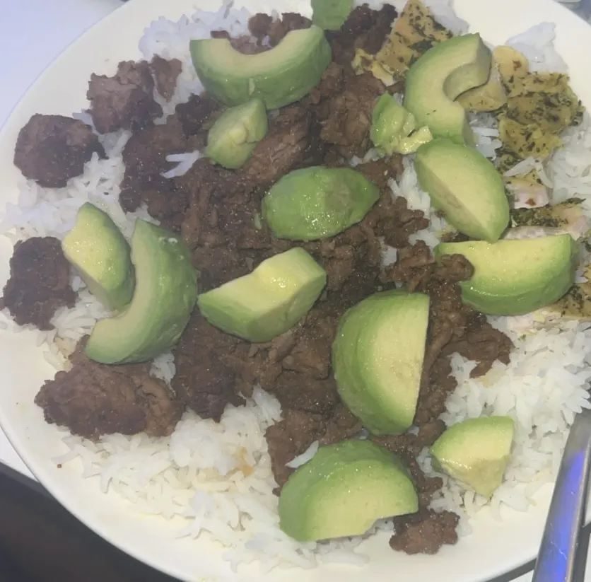
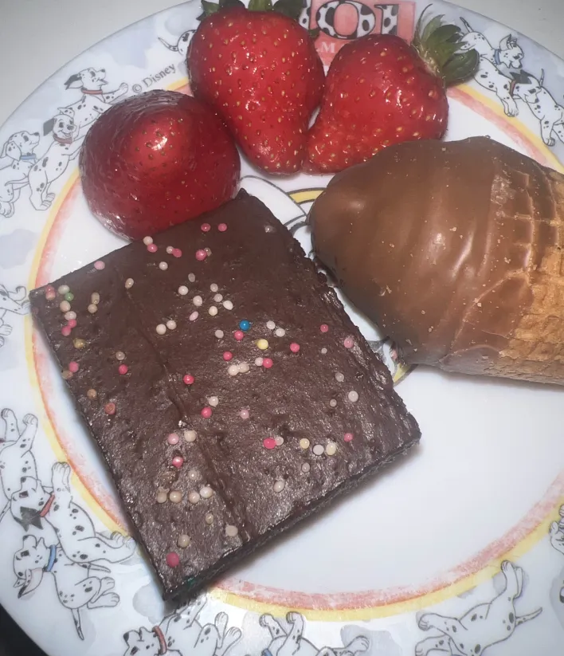

Nutrition is the most important factor in muscle building. Tracking calories made the biggest difference in my physique. I focus on eating whole foods and avoid fast food and heavily processed foods.
Here are some pictures of my typical foods and how my meals look like:

Chicken for protein, rice for carbs and avocado for healthy fats

7% ground beef for protein, rice for carbs and avocado for healthy fats

It’s also super important to find a balance. You don’t always have to follow the strict diet — some days off keeps the body focused and happy.